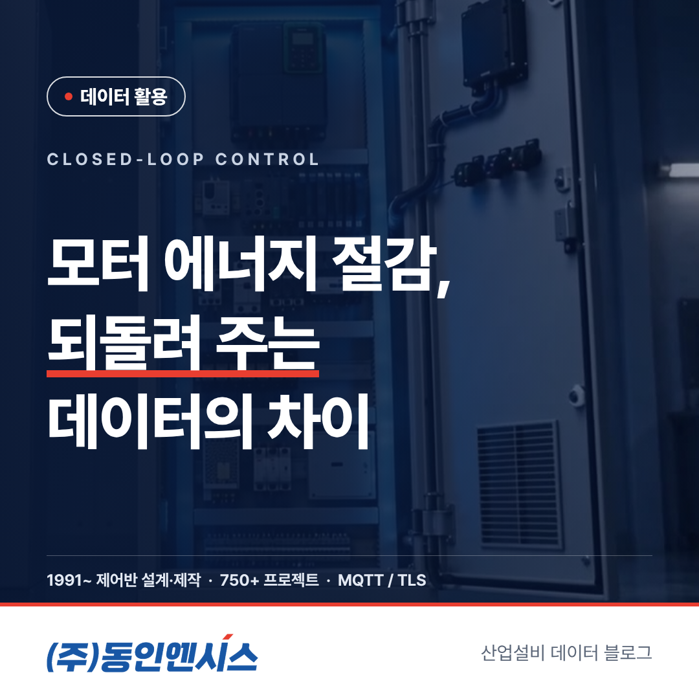
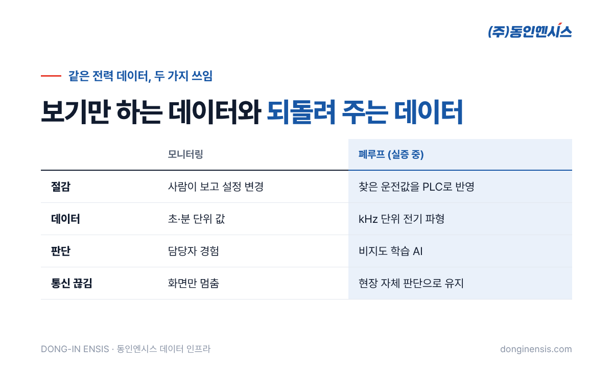
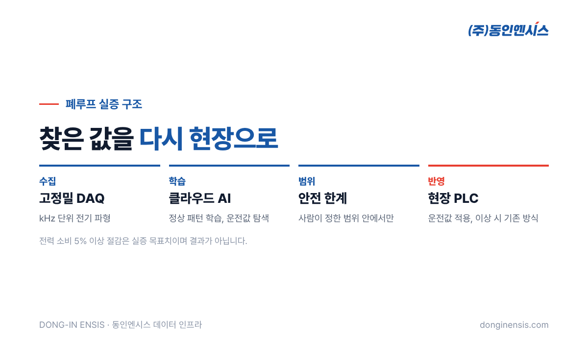

공장 전기요금에서 모터가 차지하는 몫이 크다는 이야기는 많이 들으셨을 겁니다. 그래서 전력량을 화면에 띄워 보는 곳도 늘었습니다. 그런데 화면으로 보는 것과 실제로 전기를 덜 쓰는 것 사이에는 꽤 먼 거리가 있습니다. 부산의 제어반 제작사 동인엔시스(1991년 설립)가 올해 시작한 실증 내용을 바탕으로, 모터 에너지 절감을 두고 '보기만 하는 데이터'와 '현장으로 되돌려 주는 데이터'가 어떻게 다른지 비교해 보겠습니다.
설비 데이터를 쓰는 방식은 크게 둘로 나눌 수 있습니다.
둘 다 출발점은 같습니다. 전류, 전압, 전력량, 회전속도처럼 모터가 어떻게 돌고 있는지 알려 주는 값입니다. 차이는 그 값이 화면에서 끝나느냐, 다시 설비로 돌아가느냐에 있습니다.

같은 전력 데이터라도 어떻게 쓰느냐에 따라 필요한 장비, 판단하는 사람, 대비해야 할 위험이 모두 달라집니다. 다섯 가지 기준으로 하나씩 나눠 보겠습니다.
열린 구조에서 절감은 사람이 무언가를 바꿀 때 일어납니다. 전력 그래프를 보고 쉬는 시간에 설비를 끄거나, 회전속도 설정을 낮추거나, 오래된 모터를 교체하는 식입니다. 효과는 분명하지만, 담당자가 바쁘면 그래프는 그냥 지나가고 한 번 바꾼 설정도 계절이 바뀌면 다시 맞지 않게 됩니다.
닫힌 구조에서는 운전값 조정이 정해진 주기로 반복됩니다. 부하가 줄어든 시간에는 그에 맞는 값으로, 부하가 늘면 다시 그에 맞는 값으로 옮겨 갑니다. 사람이 매번 개입하지 않아도 조정이 이어진다는 것이 가장 큰 차이입니다.
모니터링에는 1초나 1분 간격의 값으로도 충분한 경우가 많습니다. 하루 사용량이나 피크 시간을 파악하는 데에는 그 정도면 됩니다.
운전값을 되돌려 주려면 이야기가 달라집니다. 모터의 상태를 더 세밀하게 알아야 어디까지 줄여도 괜찮은지 판단할 수 있기 때문입니다. 동인엔시스가 2026년 4월부터 실증하고 있는 방식은 고정밀 DAQ(데이터 수집 장치)로 전기 파형을 kHz 단위로 받아 분석합니다. 1초에 수천 번씩 찍은 파형에는 평균값으로는 보이지 않는 작은 변화가 담깁니다.
열린 구조에서는 사람이 경험으로 판단합니다. 베테랑 담당자라면 소리와 그래프만으로도 꽤 정확하게 알아차리지만, 그 감각은 사람과 함께 움직입니다.
실증 중인 방식에서는 비지도 학습 AI가 정상 운전 패턴을 스스로 익히고, 그 패턴 안에서 전력을 덜 쓰는 운전값을 찾습니다. 고장 사례를 미리 모아 이름표를 붙이지 않아도 학습할 수 있다는 점이 특징입니다. 다만 이 기능은 아직 실증을 거쳐 다듬는 단계이며, 지금 현장에서 바로 쓰는 것은 기준값 알람과 24시간 기록입니다.

모니터링은 네트워크가 끊기면 화면이 멈출 뿐, 설비는 원래 설정대로 돕니다.
닫힌 구조는 더 신경 써야 합니다. 운전값을 바깥에서 받아 쓰는데 통신이 끊기면 어떻게 할지 정해 두어야 하기 때문입니다. 실증 중인 구조는 무거운 학습은 클라우드에서 하고, 다듬어진 파라미터만 현장 제어기로 내려보냅니다. 통신이 끊겨도 현장은 마지막으로 받은 값과 자체 판단으로 운전을 이어 갑니다. 현장에 둘 엣지 장치는 아직 여러 제품을 놓고 검토하고 있습니다.
운전값을 자동으로 바꾼다는 말에 걱정이 앞서는 것은 당연합니다. 그래서 폐루프에서 가장 먼저 정하는 것은 "얼마나 줄일까"가 아니라 "어디까지만 바꿀 수 있게 할까"입니다.
이 부분은 AI보다 제어반 설계의 영역입니다. 인터록과 보호 회로를 오래 다뤄 온 제어반 회사가 이 실증을 맡는 이유이기도 합니다.
| 구분 | 모니터링(열린 구조) | 폐루프(닫힌 구조) |
|---|---|---|
| 절감 방식 | 사람이 보고 설정 변경 | 찾은 운전값을 제어기로 반영 |
| 데이터 | 초·분 단위 값 | kHz 단위 전기 파형 |
| 판단 | 담당자 경험 | 비지도 학습 AI (실증 중) |
| 통신 끊김 | 화면만 멈춤 | 현장 자체 판단으로 운전 유지 |
| 지금 상태 | 바로 사용 | 실증·고도화 중 |
이 실증의 목표치는 산업용 모터 시스템의 전력 소비를 5% 이상 줄이는 것입니다. 결과가 나온 숫자가 아니라 목표라는 점을 분명히 해 둡니다.
Photorealistic wide photo of a clean Korean industrial motor room with a row of four grey electric motors driving fans, a tall light-grey inverter control cabinet line along the wall with small status LEDs, overhead cable trays, cool daylight from high windows, no people, no brand logos, no readable text. 3:2 landscape.
두 구조는 경쟁 관계가 아니라 순서에 가깝습니다. 폐루프도 결국 정상 운전 데이터가 쌓여야 출발할 수 있으니, 모터 에너지 절감을 생각한다면 먼저 전력량과 운전 상태를 제대로 기록하는 것부터 시작하는 편이 현실적입니다. 동인엔시스 지능형 제어반은 설비를 그대로 둔 채 제어반을 바꾸는 것만으로 이 기록을 시작할 수 있게 만들어져 있습니다.
Photorealistic photo of two Korean engineers in navy work jackets at a desk in a factory office, one pointing at a laptop showing an abstract waveform and a simple bar chart (no readable text), printed wiring diagram sheets on the desk, window overlooking a factory floor, natural light, documentary style, no brand logos, no readable text. 3:2 landscape.
폐루프든 모니터링이든, 모터 에너지 절감을 검토할 때 먼저 확인하면 좋은 항목이 있습니다.
이 네 가지를 정리해 두면 어느 설비부터 기록을 시작할지, 나중에 실증 대상으로 삼을 만한지 판단하기 쉬워집니다.
Q. 지금 바로 폐루프 제어를 도입할 수 있나요? 아직은 실증 단계입니다. 지금은 전력량·운전 상태 기록과 기준값 알람으로 시작하고, 실증 결과가 정리되면 단계적으로 더하는 방식을 권합니다.
Q. 5% 절감이 보장되나요? 아닙니다. 5% 이상은 실증의 목표치이며, 설비와 운전 조건에 따라 결과는 달라질 수 있습니다.
Q. 인버터가 없는 모터에도 적용되나요? 운전값을 바꾸려면 회전속도를 조절할 수 있는 장치가 필요합니다. 인버터가 없다면 제어반을 바꿀 때 함께 검토합니다.
Q. 쓰고 있는 PLC를 그대로 둘 수 있나요? 현장 조건을 먼저 확인해야 합니다. 기존 PLC와 연결 가능 여부를 현장 분석 단계에서 함께 봅니다.
데이터를 보는 것은 시작이고, 그 데이터가 다시 설비를 움직일 때 절감이 꾸준해집니다. 다만 그 길은 기록을 쌓는 일부터 차례로 밟아야 합니다. 동인엔시스는 제어반을 만드는 손으로 이 순서를 함께 설계합니다.
문의 051-862-3668 · dongin@donginmne.com
아래 질문 중 하나에 실제 경험으로 답해 본문 적당한 곳에 넣어 주세요. 사람이 직접 쓴 문장이 들어가면 네이버에서 저품질 위험이 줄고 노출에 도움이 됩니다.